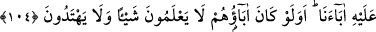

“Fakat kâfirler yalan yere Allah’a iftira etmektedirler.” Yani kâfirler, yapacaklarını
yapıyor sonra da “Bunu bize Allah emretti.” diyerek bile bile yalan söylüyorlardı.
Bunların önderi Amr b. Luhayy el-Huzâ’î idi. Bu kişi Mekke’nin en eski reislerindendir.
İlk olarak Hz. İsmâil (a.s.)’ın dînini bozan, putları ilah edinen ve heykellerini diken,
bahîra, sâibe, vasîle ve hâmı meşru kılan, din haline getiren kişidir.
Rivayet edilir ki, Hz. Peygamber (s.a.) onun hakkında şöyle buyurmuştur: “Ben onu
cehennemde gördüm. Bağırsaklarını sürüklüyor ve bağırsaklarının kokusuyla
cehennemliklere eziyet veriyordu.”[57]
Reislerinin ve önde gelenlerinin durumu işte böyledir.
“Ve onların çoğunun akılları ermez.” Onlar, ileri gelen kâfirlerin kandırıp
Rasûlullah (s.a.)’e karşı gelmeye sevk eden rezil ve alçak insanlardır. Çünkü kâfirlerin
ele başlarının söyledikleri bâtıl iftiralardan başka şeyler değildir. Onlara düşen bu
iftiralara karşı gelip hak ve hidayete ulaşmak olduğu halde onlar reislerini taklit
esaretinden kurtulamamış akılsızlardır.
104. Onlara, “Allah’ın indirdiğine ve Rasûl’e gelin” denildiği vakit, “Atalarımızı
üzerinde bulduğumuz (yol) bize yeter” derler. Ya ataları hiçbir şey bilmiyor ve
doğru yol üzerinde bulunmuyor idiyse?
“Onlara” yani o bahsedilen çoğunluğa, hidayet yolunu göstermek ve irşad etmek için
“Allah’ın indirdiğine” helal ve haramı beyan eden Kur’ân-ı Kerim’e “ve” Kur’ân’ın
kendisine indirildiği “Rasûl’e gelin” ki işin hakikatini kavrayabilesiniz, helal ve
haramı birbirinden ayırdedebilesiniz “denildiği vakit ‘Atalarımızı üzerinde
bulduğumuz (yol) bize yeter’ derler.” Bu âyet onların hakka ulaştıran hidayet rehberine
karşı inat ve taassuplarını, dalalete çağırana teslim olup peşinden gitmelerini beyan
etmektedir.
“Ya ataları hiçbir şey bilmiyor ve doğru yol üzerinde bulunmuyor idiyse?” Yani
ancak âlim olarak bilinen, hidayete ermiş kişilere “ittibâ” edilebilir. Bu da huccet
olmadan bilinemez. Yani bir kişinin ilim ve hidayet ehlinden olduğu, ancak bir delil
olursa bilinebilir, yoksa bilinemez. Dolayısıyla da onun peşinden gidilemez.
Vâiz Hüseyin Kâşifî Tefsiri’nde şöyle söylemektedir:
Onlar câhil ve yoldan çıkmış kimselerdi. Onların taklidi faydasızdı. Belki âlimi taklid
etmek gerekiyordu ki iş, sonunda tahkîke ulaşsın.
Celâleddin Rûmî (k.s.) Mesnevî’de şöyle der: